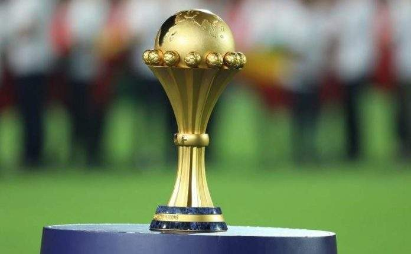
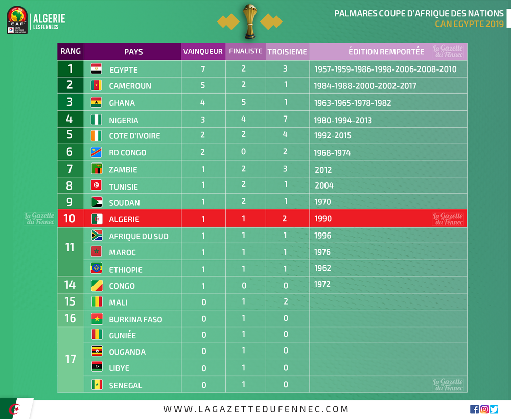

Coupe d'Afrique des nations

La Coupe d'Afrique des nations, officiellement Coupe d'Afrique des nations Total (nom lié au sponsor) et parfois abrégée en CAN, est la plus importante compétition africaine de football entre nations. Créé en 1957, organisée par la Confédération africaine de football (CAF) tous les deux ans.
À partir de 2013, la CAN continue d'avoir lieu tous les deux ans, mais elle est organisée les années impaires afin d'éviter qu'elle se dispute la même année que la Coupe du monde de football.
Le titre de champion d'Afrique de football est détenu par l'Algérie, vainqueur de l'édition 2019. L'Égypte est la première nation africaine à avoir remporté le trophée continental trois fois de suite (victoires en finale face à la Côte d'Ivoire en 2006, face au Cameroun en 2008 et face au Ghana en 2010).
Historique
L'origine de la Coupe d'Afrique des nations remonte à juin 1956, lorsque la création de la CAF est proposée durant le troisième congrès de la FIFA à Lisbonne par l'intermédiaire de l'Égyptien Abdelaziz Abdellah Salem qui est débouté de sa demande en raison du faible nombre de membres africains (quatre). Celui-ci décide alors de quitter le congrès en disant : « Si nous ne sommes pas tous traités ici sur le même pied d'égalité, il n'est nullement question de notre présence parmi vous. » ; il est accompagné, par solidarité, par le Soudanais Mohamed Abdelhalim, ce qui pousse la FIFA à réagir favorablement à sa demande. Immédiatement, un projet de créer une compétition continentale se met en place, à laquelle Salem souhaite donner son nom, mais devant l'opposition des autres membres, l'appellation Coupe d'Afrique fut adoptée (a contrario, le trophée remis au vainqueur porte le nom de Salem).
LLa Zambie met fin à la domination égyptienne lors de l'édition 2012. Équipe surprise du tournoi, elle remporte le trophée aux dépens du grand favori, la Côte d'Ivoire, aux tirs au but après prolongations. Triple tenante du titre, l'Égypte n'a pas réussi à se qualifier pour cette CAN. N'étant pas qualifié non plus en 2012, le Nigeria retrouve la CAN lors de l'édition 2013. Tombé dans la poule C, en compagnie du tenant du titre zambien, le Nigeria termine derrière le Burkina Faso à la différence de but (la Zambie étant quant à elle éliminée prématurément). La finale oppose à nouveau ces deux équipes, avec pour vainqueur le Nigeria, qui signe son retour au premier plan après son dernier trophée en 1994. Cette embellie est néanmoins de courte durée puisque le Nigéria ne réussit pas à se qualifier pour la CAN 2015 en Guinée équatoriale qui a remplacé au pied levé le Maroc, désigné dans un premier temps comme pays hôte mais qui a été disqualifié par la CAF en raison de sa demande de reporter le tournoi à cause de l'épidémie d'Ebola. Cette édition 2015 voit le sacre de la Côte d'Ivoire, dans une finale remportée face au Ghana dans une interminable séance de tirs au but (8 à 7). Deux ans plus tard, c'est au tour du Cameroun de renouer avec son glorieux passé dans la compétition en battant l'Égypte 2-1 en finale de la CAN 2017 au Gabon. Les « Lions indomptables » prennent ainsi leur revanche sur les « Pharaons » qui les avaient battus par deux fois en finale (1986 et 2008). Pour la Can 2019, l'Équipe d'Algérie de football gagne sa deuxième Can (après 1990) contre le Sénégal sur le score de 1-0.
